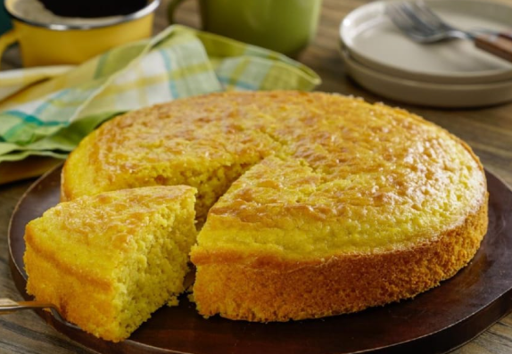

Ingredientes
- 4 Elotes desgranados
- 4 Huevos
- 1 Barra de mantequilla
- 4 Cucharadas de harina de trigo
- 1 Cucharada de polvo para hornear
- 1 Lata de leche condensada
- Esencia de vainilla al gusto
- 1/4 De taza de leche
Preparación
- Precalienta el horno a 180°C y engrasa un molde (puede ser redondo o rectangular).
- Licuar los ingredientes húmedos: En una licuadora, mezcla los granos de elote, la leche condensada, los huevos, la mantequilla y el extracto de vainilla hasta obtener una mezcla suave y homogénea.
- Mezclar los ingredientes secos: En un bol aparte, combina la harina, el polvo para hornear y la sal. Agrega esta mezcla a la licuadora poco a poco hasta que todo se integre.
- Verter en el molde: Vierte la mezcla en el molde engrasado, distribuyéndola de manera uniforme.
- Hornea durante 45-50 minutos, o inserta un tenedor en el centro y si sale limpio, quiere decir que el pan está ya cocido.
- Sácalo del Horno y deja enfriar antes de desmoldarlo.
- Puedes servirlo caliente o a temperatura ambiente y acompañarlo de un atole.